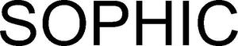

Trade Mark Journal No.2025/020 16 May 2025
WO0000001847839 (3,21,35)
Office of origin: Australia
Date of International Registration:19 February 2025
Date of designation in the UK:
19 February 2025

International priority date claimed: 20 December 2024
(Australia)
(2507913)
- Class 3
- Hair and body shampoos; shampoos for babies; dog washes [shampoos]; shampoos for animals [non-medicated grooming preparations]; pet shampoos and conditioners [non-medicated, non-veterinary grooming preparations]; pet shampoos, non-medicated; baby hair conditioners; beauty lotions; body and beauty care cosmetics; beauty creams; face and body beauty creams; face and body creams; hair care creams; hair care lotions; hair care masks; preparations for application to or for care of the face, body, skin, scalp, hair and nails, including but not limited to natural and organic preparations; hair care preparations; cosmetic hair care preparations; shampoos and conditioners for use on the hair; hairdressing aids and lotions for styling and colouring; hair balm, balsams, bleach, colour, dyes, creams, colourants, decolourants, emollients, frosts and gel; hair glaze, lacquers, lighteners, lotions, mascara, moisturisers, mousse, nourishers, oil, thickeners, rinses, relaxers, pomades, spray, tints, tonic and wax; hair waving and hair setting preparations; hair protection creams, gels, mousse and lotions (non-medicated); hair styling aids, compositions, lotions, waxes and preparations; preparations for cleaning, dyeing, colouring, conditioning, enriching, dressing, fixing, styling, waving, or setting the hair; neutralizing hair preparations; hair fixatives; conditioners in the form of sprays for the scalp; gels for use on the scalp; non-medicated preparations for the care of the scalp; non-medicated scalp treatments; preparations for the maintenance of the scalp; preparations for the scalp (shampoo); body and facial soaps, cleansers, washes, creams, mists, toners, moisturisers; body butter, cream, deodorants, lotions, masks, milks, oils, powders, scrubs, soaps and sprays; cosmetics and cosmetic preparations; cosmetic creams and lotions for face and body care; cosmetic powders, creams and lotions for the face, hands and body; cosmetic preparations; skin care creams, lotions, balms, gels, moisturisers, soaps and powders; non-medicated dermatological creams and lotions for the skin; toning lotions for face, body and hands for cosmetic use; cleansing milk for skin care; non-medicated acne creams and lotions for the skin; non-medicated skin creams, toners, serums, gels and balms; non-medicated skin cleaning preparations including lotions, creams, foams, masks, and gels; anti-ageing creams and lotions for the skin; anti-ageing skin care preparations; cosmetic creams for firming skin around eyes; wrinkle removing skin care preparations; skin irritation creams and lotions; protective creams for the skin; conditioning creams and lotions for the skin; soothing creams and lotions for the skin; eye creams, gels, and lotions (non-medicated); eye liner, pencils and shadow; eye make-up and make-up removers; face cream, oils, paint, lotions, powders, gels and milk; face packs; cosmetic and cleansing masks for the face including charcoal purifying face masks, ginseng clarifying polishing face masks and honey deep nourishing face masks; smoothing face masks; non-medicated scrubs for face and body; non-medicated creams for the lips; lip balms and glosses; lip conditioners; aloe vera creams for the skin; tissues impregnated with soaps, moisturisers, toners, cosmetics, cosmetic lotions; body and facial polishes; body and facial scrubs; exfoliants for the skin; exfoliating products including but not limited to scrubs, washes, creams, cleansers, soaps, lotions, masks; micro-exfoliate products for the skin; cleaning preparations for the hands; hand care preparations; hand cream; hand barrier creams; cleaning preparations for the feet; non-medicated foot balms and powders; deodorants for the feet; talcum powder; perfumes; flower perfume extracts; oils for perfumes and scents; essential oils; non medicated bath oils and salts; incense; aromatic substances for personal use; deodorants; antiperspirants; cosmetic sprays for use on the body; sun-tanning preparations; sunscreen preparations; self-tanning lotions; sun-tanning oils; detergents non-medicated preparations for the care of the teeth; mouth washes not for medical purposes; cosmetic kits; cotton buds, and cotton used for cosmetic purposes; non-medicated cosmetics and toiletry preparations; non-medicated dentifrices; bleaching preparations and other substances for laundry use; cleaning, polishing, scouring and abrasive preparations.
- Class 21
- Hairbrushes; combs; animal combs; pet combs; brushes; shampoo brushes; shower brushes; fur brushes for animals; wide-toothed combs; detangling brushes for hair; hair brushes; detangling combs for hair; hair detangler combs; pet brushes.
- Class 35
- Retail and wholesale services for hair preparations and treatments; wholesale and retail store services connected with the sale of beauty and personal care products; retail store services connected with the sale of beauty and personal care products; retail and wholesale services in relation to body cleaning and beauty care preparations, including make-up, soaps and gels; online retail services connected with the sale of beauty and personal care products via the web; online retail store services relating to cosmetics and beauty products; on-line wholesale store services connected with the sale of hygienic implements for animals; on-line wholesale store services connected with the sale of hygienic implements for humans.
SOPHIC ASSETS PTY LTD
Representative: Basck Limited, 9 Hills Rd Cambridge CB2 1GE UNITED KINGDOM